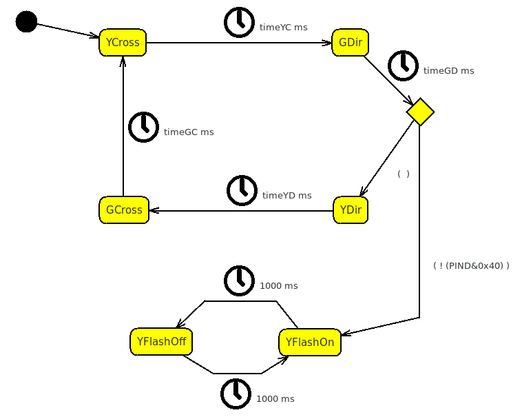

Branches and conditions
Night and Day

This is the traffic semaphore we have previously defined in the
module Semaphore .
Now we will introduce a Night/Day switch that is an external
timer with a contact, NO/day and NC/night.
We will connect this timer between the pull-up input we set for the
port 7 of the Arduino hardware, that is the PORTD
6.
During the night the original state of the Semaphore is
suspended, and the yellow lights flash on both side
to indicate a potentially dangerous situation.
We can do that by introducing two more states YFlashOff
and YFlashOn .
In YFlashOff all the lights are switched off :
/* Bit X X GD YD RD GC YC RC */
PORTD=B11000000;
In YFlashOn instead both the yellow light are on :
/* Bit X X GD YD RD GC YC RC */
PORTD=B11010010;
Two Timed Transitions are used to create a simple flashing loop.
This time, we will put the code directly as Entry Action of the states instead of the transition action.
Well. Now the problem is to connect the new piece of machine to the old one with an entering transition and an exiting transition.
We will act between the GDir and YDir by removing the transition and replacing it with a Branch :
Note : to remove the transition as well as each
other object in a context, you have to keep selected it pressing the
left mouse key and at the same time, pressing Del.
The Branch is a standalone object (not primary) which changes the logic of the code generation, by introducing conditions.
After we have placed the Branch (that does not have properties) , we can complete everything by adding an entry transitions, timed as the previous one and with the same parameters, from GDir to the Branch.
The conditions stay in the exiting transitions from the Branch to the destinations.
In this case, we can place two different exiting transitions from the Branch : the first one to YDir and the second one to YFlashOn .
A double click on the Transition connecting the Branch to the YFlashOn , and the related Editing Dialog Box will open :
This dialog tell us that transitions exiting from a branch, are not real transitions because they do not have a trigger. In facts, the trigger, but are executed under a Guard Condition which means, if and only if the condition is satisfied. In this case we place this condition :
! (PIND&0x40)
That means only if the PIND 6 BIT is 0 that means that the pull-up is forced to ground by the external clock.
The Transition connecting the Branch to the YDir can be leaved empty , in this case it will be the default transition acting only if no other conditions are satisfied in any way.
A
Branch is a cross-point which can have
more
entering lines and
one or
more exiting line.
The entry lines are regular Transitions shot
by some kind of event and coming also from different states. The exiting
lines, are not regular transitions, you can call it Branches
if you want, because they have not a connected event, but only
different correlated or uncorrelated conditions that brings
to different States.
This conditions are expressed by setting the field Guard
Condition. If an exiting line has no condition,
it is called default or else, and it is executed only if all
the other conditions fail.
Both, the entering Transitions and the exiting Branches
can have an associated Action, in this case Transitions,
are executed immediately when the event happens, while the winning Branch
is executed only if its condition is true.
Note: You can have several conditioned and only one default
condition, but if the conditions are uncorrelated the result is
unpredictable, because only the first branch meeting the right
condition is traveled. In this case you need to modify the model and
create a Cascade of Conditions to be sure your result is
determinable.
Now that we have the entering situation we can define an exit situation and in this case we will use a shortcut.
In facts , by definition, a Timed Transition works as Timeout . If this Timeout is undetermined or too short, is better to use a branch to be sure that the things are done in the right order. If the timeout is relatively long you can parallelize the exiting transition from a state with a Conditioned Transition or Token Transition too.
Usually the normal use of the Timed Transitions is just to be used as a timeout for other events to bring the system in a stable and safe state, if the event does not occur.
If we use the exiting transition from YFlashOff as timeout we can introduce a new Conditioned Transition .
We can connect YFlashOff directly to GCross with a transition and use the related dialog box to compile this condition :
Note that in the other part of the model, we placed the code directly on the transition, so the code is never replicated automatically and must be defined for each transition.
The condition is the opposite of the previous one it shots immediately when in the state YFlashOff detects that the timer opens, or at most two seconds after if it is too late.
Note: the main difference between this method and the Branch
placed above, is that the the Branch works only at the
moment the main transition shots, while the Conditioned
Transition works for the whole time the machine remains in YFlashOff.
The resulting model is :
And now you can Generate the Code , upload it on Arduino
but before running it, you can simulate the external timed switch with a
simple wire wrapped to the pin 7 of the Arduino connector to
the Ground.
When the wire is connected to the ground, after the Green on Main Direction the semaphore begins to flash, until the wire is removed.
Obviously you are strongly encouraged to take a look at the generated
code, to better understand as the branches are managed by SunRiZe.